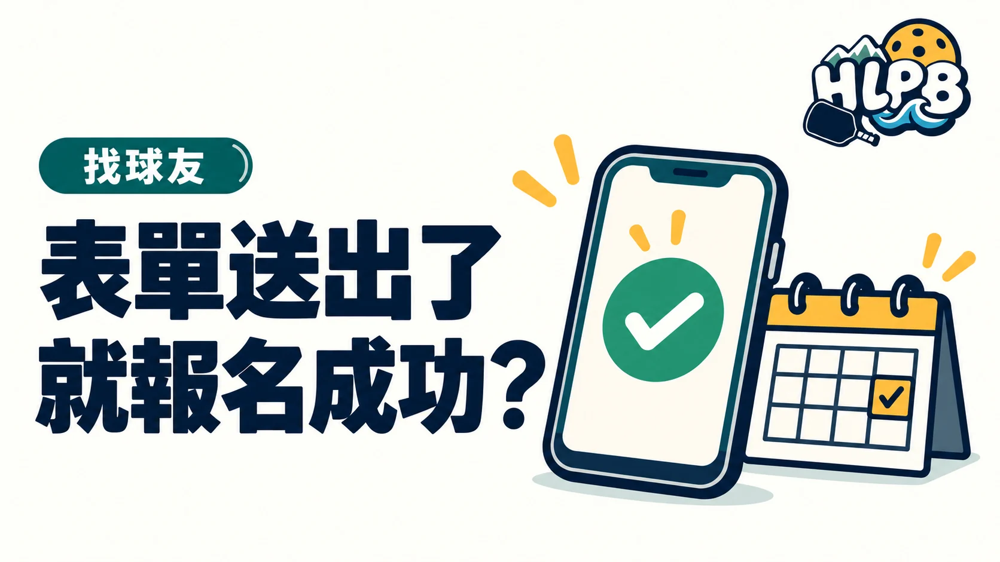

表單送出、完成付款與取得名額，未必是同一個步驟。報名花蓮臨打時，要依該場公告的確認方式判斷，不把系統顯示已送出直接當成主辦者已接受。
三種狀態分開核對
| 狀態 | 接下來應確認 |
|---|---|
| 資料已送出 | 是否還有審核、付款或回覆步驟 |
| 已付款 | 是否符合付款及名額確認流程 |
| 正式名單已確認 | 日期、時段、地點與攜帶用品 |
不是所有球局都有審核或付款程序。這張表是檢查方向，不是替任何協會或平台新增報名規定。若公告已明確說明成功條件，就照該條件完成；沒寫清楚時，再向開團者確認。
保存什麼資料比較有用？
HLPB 建議保留場次原始公告、填表日期、使用的報名姓名及確認訊息，避免只保存群組邀請連結。收到後續名單時，核對自己報的是同一個日期與時段，雙打或多人報名也要確認人數。
臨時不能去，怎麼處理？
依公告指定方式通知，不把取消寫在無人管理的地方，也不要自行把名額交給別人而未確認是否允許。退費、轉讓及候補各有安排，本文不代替開團者承諾處理結果。
加入群組只是取得聯絡入口，實際場次仍應另行確認。
延伸閱讀：花蓮匹克球臨打額滿了，候補怎麼問？、花蓮匹克球開團，貼一個連結就夠了嗎？。
資料來源：HLPB 揪打球入口。
內容更新：2026-10-20｜資料來源：HLPB 本站資料